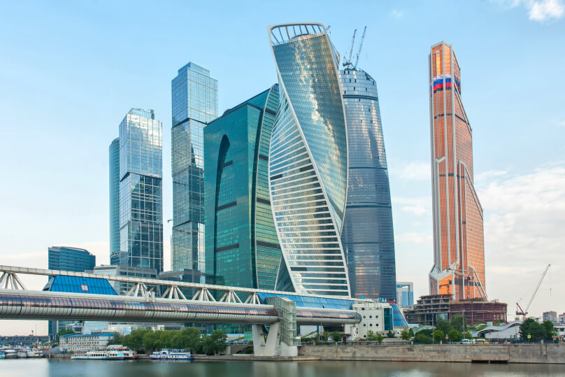

Экосистема маркетинговых исследований и продуктов для бизнеса
Вращаем мир вокруг сервиса для гармонии бизнеса и людей
Узнать подробнее
Наша экспертиза
Рынок и потребители
Создание бренда, выход на новый рынок, запуск рекламных
кампаний. Оценим состояние и определим тенденции развития рынка, рыночного спроса и поведения
потребителей для определения стратегии продвижения бренда, выявим достоинства и недостатки
текущего позиционирования, оценим эффективности рекламных креативов и кампаний помощью
собственного Контакт Центра и онлайн панели Сбор Идей.
Управление клиентским опытом
Сбор и обработка обратной связи клиентов с разнообразных
источников, измерение удовлетворенности, лояльности и других метрик сервиса по текущей
клиентской базе. Автоматизируем бизнес-процессы сбора и обработки обратной связи от клиентов,
покроем все каналы коммуникации и консолидируем ключевые показатели клиентского опыта (CX) на
единой платформе Спектра.


Розничные сети
Работа существующих розничных точек продаж и открытие новых
магазинов. Оценим эффективность работы розничной сети глазами потребителя: качество сервиса и
мерчандайзинга, динамику спроса и продаж, измерим проходимость, оценим работу конкурентов по
соседству с помощью инновационного подхода к классическому методу Тайный Покупатель. А также
организуем независимый фото-, аудио- и видеомониторинг экспертами нашего Data центра
Видеомониторинг.
Digital CX/Цифровой опыт клиентов
Разработка, использование и улучшение цифровых сервисов для
потребителей: сайт, приложение, личный кабинет, сервисы бронирования и продаж, маркетплейсы
товаров и услуг. Глазами массового потребителя исследуем интерфейсы и логики сервиса, опишем
карты пути клиента во всех сценариях использования, сделаем аудит процесса онбординга и
коммуникаций, сравним с конкурентами и лучшими мировыми практиками в нашем департаменте UX/UI
исследований.


Персонал
Развитие линейного персонала и руководителей среднего звена,
директоров магазинов. Сделаем аудит процесса подбора и адаптации персонала с помощью метода
Тайный соискатель. Измерим в динамике удовлетворенность, лояльность и вовлеченность
сотрудников. Автоматизируем обучение и адаптацию персонала на онлайн платформе Среда.
Брендинг и BTL
Определение стратегии развития бренда, активные BTL кампании.
Проведем оценку здоровья бренда. Организуем программы повышения узнаваемости бренда и
стимулирования продаж. Предоставим данные для планирования общей ценовой политики (ценовой
мониторинг в онлайн магазинах и рознице), оценим эффективность наружных рекламных
кампаний.


Продукты и сервисы
Разработка и вывод на рынок новых продуктов, сервисов и услуг.
Быстро и точно измерим отношение потребителей к определенному продукту/сервису/услуге, оценим их
рыночный потенциал, сравним с конкурентами, определим явные и скрытые мотивы использования
применяя Комплексные технологии маркетинговых исследований.
Коммуникации и сообщества
Работа с репутацией бренда в сети Интернет. Изучим и
проанализируем репутацию бренда в сети Интернет, организуем SMM-продвижение, оценим
эффективность коммуникационных кампаний. На базе платформы Спектра организуем сообщество
клиентов.


Свяжитесь с нами
Мы открыты для вопросов, деловых запросови консультаций. Свяжитесь с нами сегодня, и сотрудник нашей команды поддержки свяжется с вами в ближайшее время
Получить консультацию